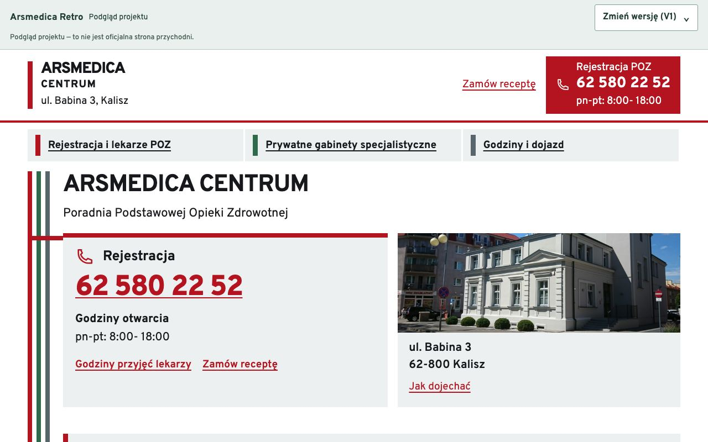
Retro V1
Linie prowadzące
Kolorowe kierunki porządkują rejestrację, lekarzy i dojazd. Czytelny układ inspirowany oznaczeniami przychodni.
Otwórz stronęWybierz styl, porównaj układy i otwórz dowolną wersję strony.
18 układów i 126 wariantów do obejrzenia
5 układów

Kolorowe kierunki porządkują rejestrację, lekarzy i dojazd. Czytelny układ inspirowany oznaczeniami przychodni.
Otwórz stronę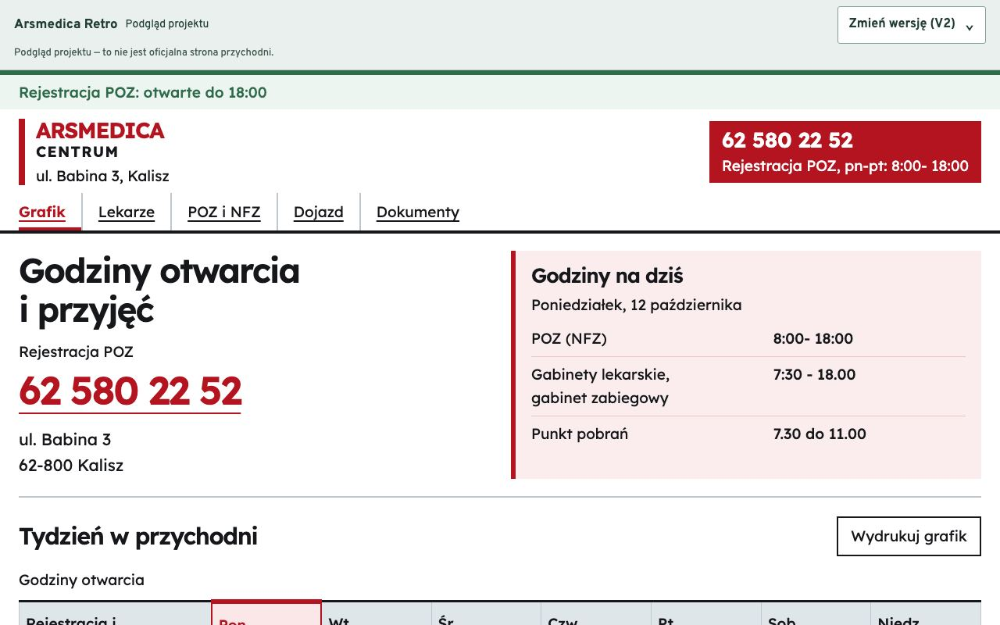
Godziny otwarcia i przyjęć są najważniejszą częścią strony. Grafik można wydrukować.
Otwórz stronę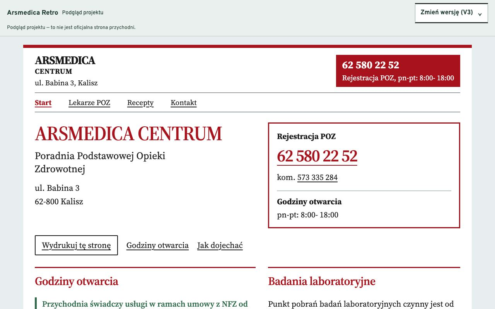
Układ drukowanego informatora, z klasycznymi literami i wyraźnym numerem telefonu. Przygotowany także do wydruku.
Otwórz stronę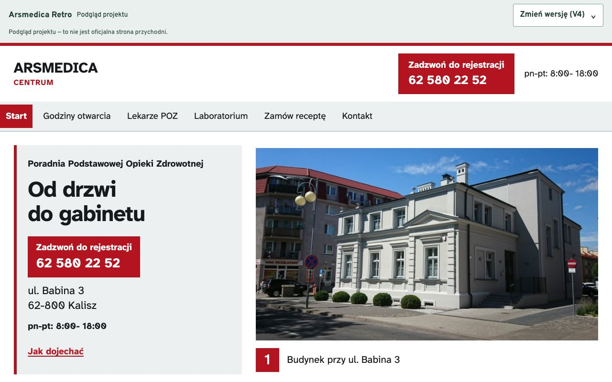
Zdjęcia prowadzą od budynku przez rejestrację do gabinetu. Strona pokazuje rzeczywiste wnętrza przychodni.
Otwórz stronę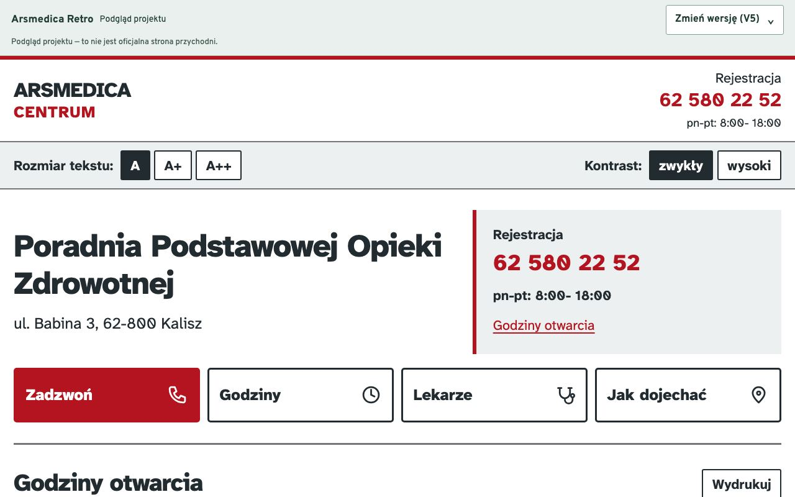
Duże litery, proste skróty i rozmiar tekstu do wyboru. Dostępny jest również wysoki kontrast.
Otwórz stronę11 układów, 110 wariantów kolorystycznych
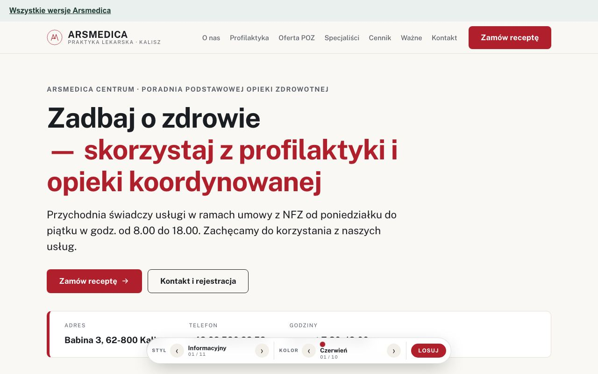
Duże litery, prosta nawigacja i telefon pod ręką. Spokojna strona nastawiona na szybkie znalezienie informacji.
Otwórz stronę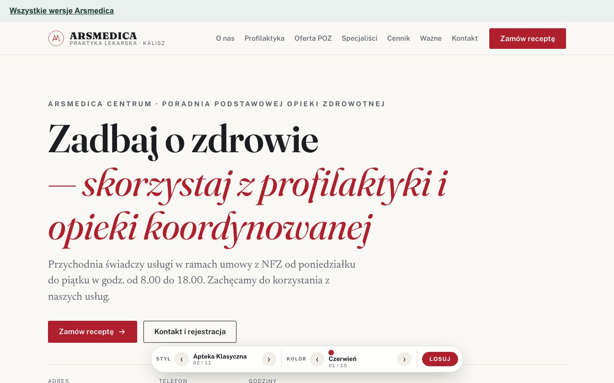
Szeryfowe litery i podwójne ramki. Układ nawiązuje do dawnej apteki i drukowanych informatorów.
Otwórz stronę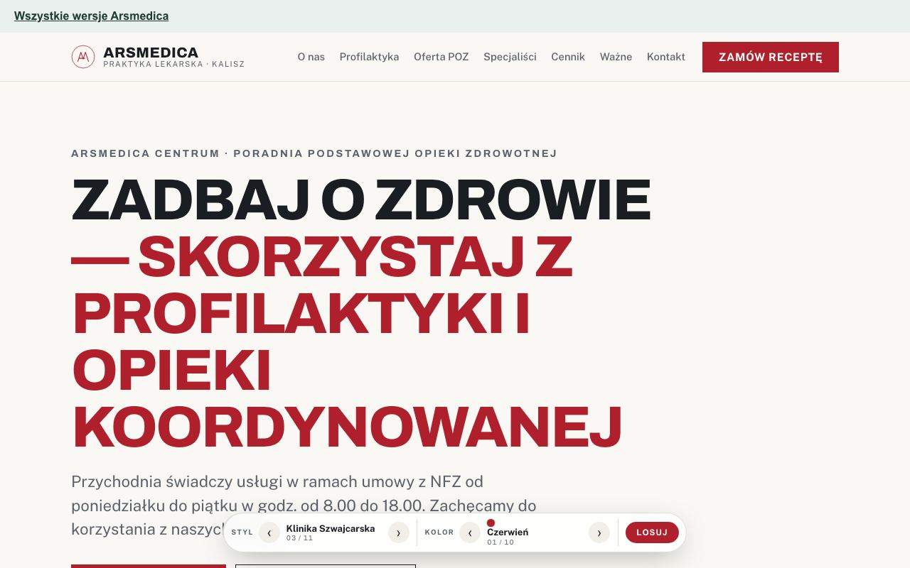
Równa siatka, mocne nagłówki i oszczędne formy. Wyraźny porządek w dużej ilości informacji.
Otwórz stronę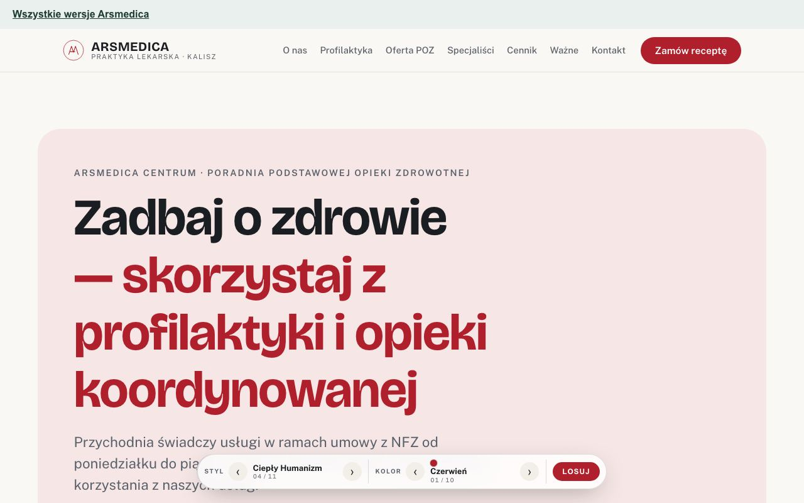
Miękkie narożniki, łagodniejsze formy i przyjazna typografia. Mniej urzędowy charakter strony.
Otwórz stronę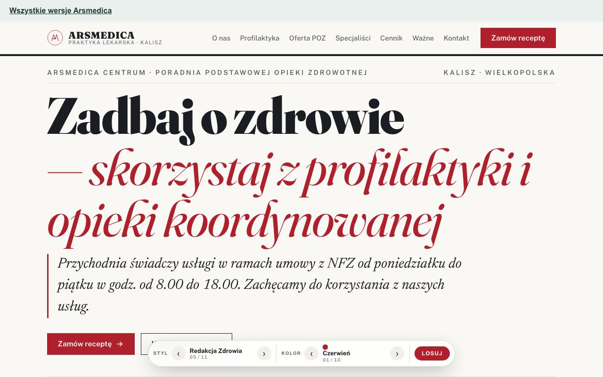
Układ magazynu z dużym tytułem i redakcyjną typografią. Treści czyta się jak artykuły.
Otwórz stronę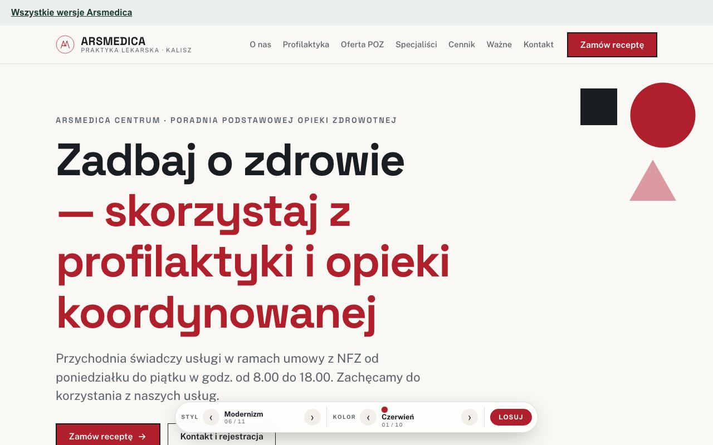
Geometryczne formy i wyraźne bloki koloru. Projekt inspirowany modernistycznym plakatem.
Otwórz stronę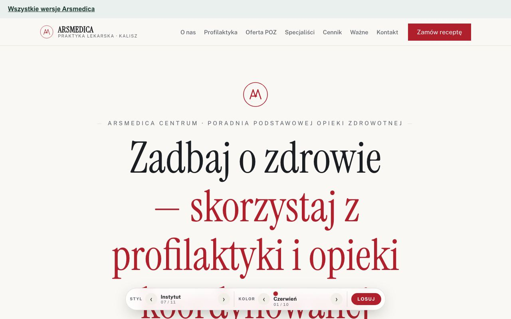
Symetryczny układ, spokojne szeryfy i znak z inicjałów. Formalny, instytucjonalny charakter.
Otwórz stronę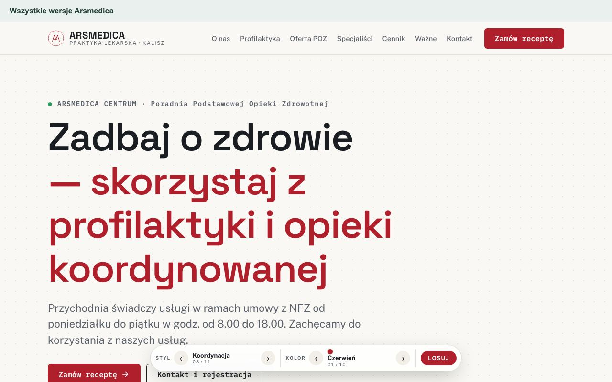
Panele informacyjne, siatka i uporządkowane dane. Układ przypomina tablicę organizacji opieki.
Otwórz stronę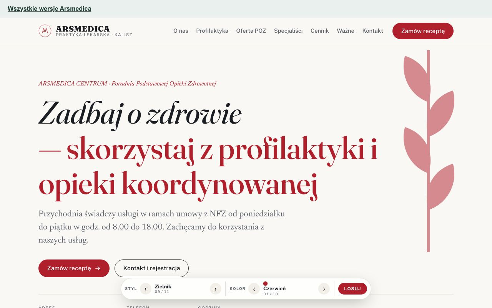
Botaniczne motywy, szeryfy i kursywa. Lżejsza, bardziej naturalna interpretacja tematu zdrowia.
Otwórz stronę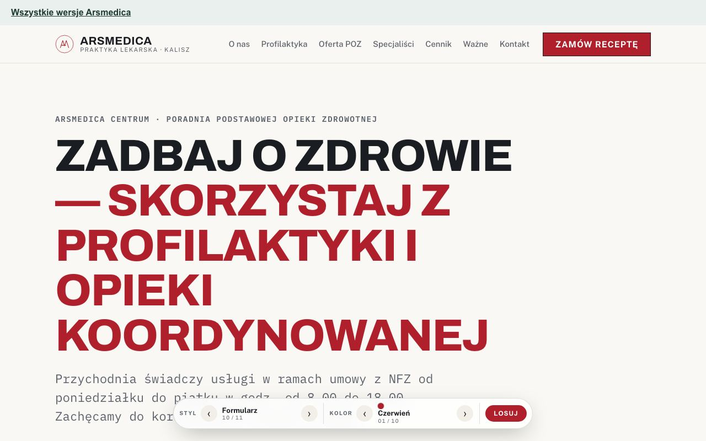
Rubryki i wyraźnie wydzielone pola. Nawiązanie do skierowań i dokumentów medycznych.
Otwórz stronę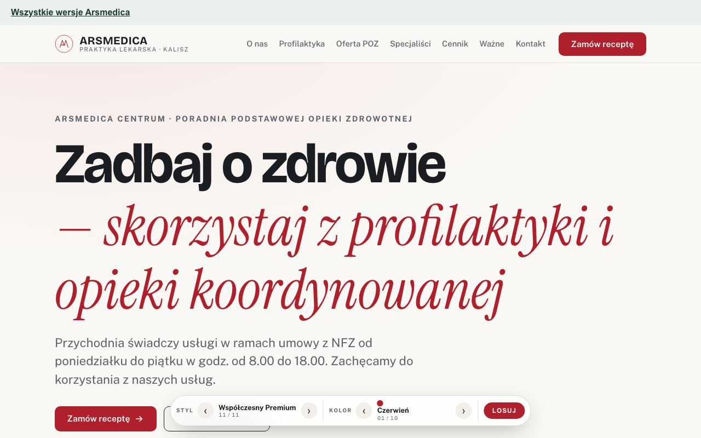
Przestronny układ i połączenie prostych liter z kursywą. Bardziej reprezentacyjna strona przychodni.
Otwórz stronę1 układ, 10 wariantów kolorystycznych

Spokojna strona z osobnymi zakładkami dla lekarzy, specjalistów i kontaktu. Klasyczne nagłówki i czytelne karty informacji.
Otwórz stronę1 układ

Redakcyjny układ z dużą fotografią, spokojnymi nagłówkami i osobnymi stronami usług. Wersja z rozbudowaną nawigacją.
Otwórz stronęNie znaleziono takiego stylu. Wpisz inną nazwę.